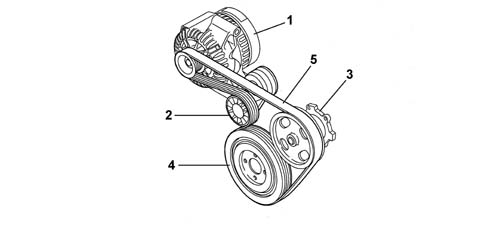
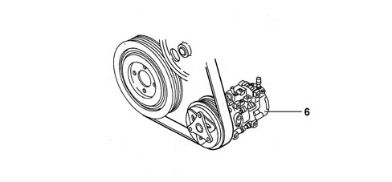

Introduction - VARIOUS ENGINE COMPONENT CONTROLS
- Path
- Descriptions > 10 ENGINE > 1092 VARIOUS ENGINE COMPONENT CONTROLS > Introduction - VARIOUS ENGINE COMPONENT CONTROLS
- Kind
- system description
- Applies to
- engines: 1.3 JTD; all production periods
- Interactive page
- https://sloeber94.github.io/elrnDB-lYpsln/en/#/2429841
Applies to: engines: 1.3 JTD; all production periods
STRUCTURE
The single engine components Poly-V type belt (5) drives the alternator (1), water pump (3) and, where fitted, the air conditioning compressor (6).
There is an automatic tensioner (2) which means that there are no planned maintenance operations.
The crankshaft pulley (4) includes a flexible sector which reduces crankshaft torsional vibrations and stress on the belt and consequently on the engine auxiliary components.

1 - Alternator 2 - Belt tensioner 3 - Water pump 4 - Crankshaft pulley 5 - Engine components drive belt
Applies to: engines: 1.3 JTD; all production periods
STRUCTURE
For versions with air conditioning

6 - Air conditioning compressor